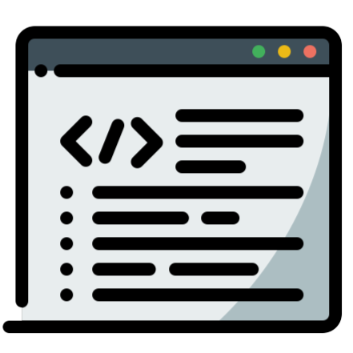
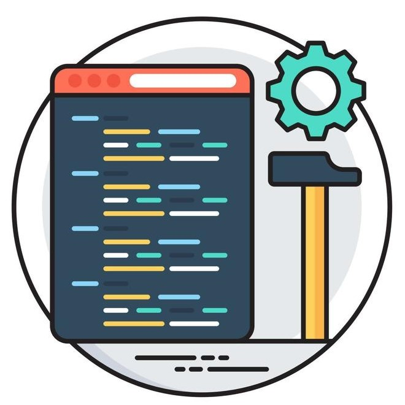

Tutte le conoscenze che ho maturato in questi anni.

Programmazione Web
In questi anni ho consolidato sempre di piu' le mie conoscenze utilizzando
linguaggi web come HTML, CSS e JavaScript realizzando siti web come questo e
altri progetti della scuola, inoltre ho anche esperienza con WordPress.
Lato server invece ho appreso PHP e SQL gestendo database relazionali e creando
progetti scolastici.

Programmazione Generale
Riguardo alla programmazione classica, ho esperienza con java e quindi conosco
bene la OOP, inoltre possiedo un' infarinatura generale di linguaggi a basso livello
come C++ e C. Tutti questi linguaggi mi hanno accompagnato durante gli anni scolastici
e con questi ho creato progetti.
Sviluppo Mobile Multiplatform
Nonostante la Programmazione Mobile non sia insegnata in ambiente scolastico,
e' una mia grandissima passione, forse la piu' grande in tutto cio' che e' l'informatica,
infatti ho intrapreso lo studio autonomo di dart e flutter, nonostante io non abbia ancora
pubblicato app negli store mobile, sto apprendendo sempre piu' per riuscirci e raggiungere questo obiettivo.